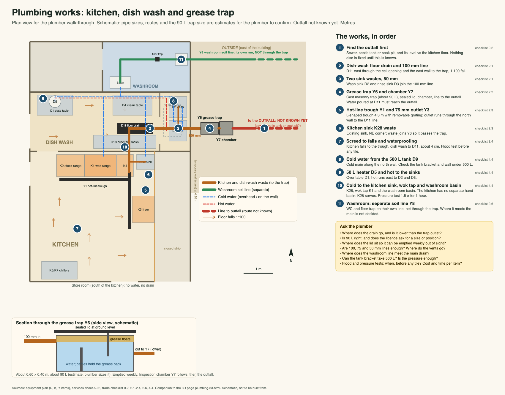

Plumbing works: kitchen, dish wash, grease trap
Schematic cut-away for the plumber walk-through · drag to turn, pinch to zoom, tap a number
3D
2D plan
See it in the main model
Overview
Dish wash
Kitchen
Grease trap
Washroom
Plan view
See under the floor
Drains
Water
Equipment
Equipment names
Kitchen and dish-wash waste (to the grease trap)
Washroom soil line (NOT through the trap)
Cold water
Hot water
Open or print the 2D plan as a PDF
